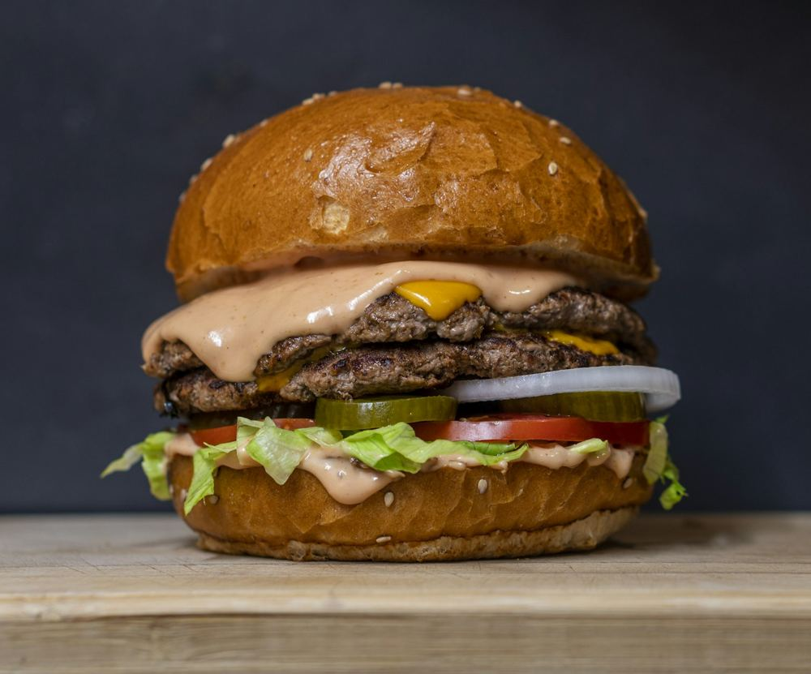

Tequeños
Salsas de la casa
Carne al momento, pan que aguanta el chorreo y salsas de la casa. Premier quality. Made fresh.
Sobre nosotros
Fina's Burger nació en el corazón de Paracuellos con una idea sencilla: hacer la hamburguesa que a ti te gustaría que te pusieran, sin atajos.
Cada pedido se prepara al momento. Carne smash, pollo crujiente o pulled pork, con salsas de la casa y acompañamientos que no son un trámite: patatas gajo, boniato, tequeños.
Un sitio de barrio, con cerveza fría, buena música y partido en la tele cuando toca.

Nueva burger
el sabor que enamora
Carne jugosa, queso cheddar fundido, bacon crujiente, cebolla caramelizada y rúcula, con una salsa cremosa que te va a hacer repetir. Acompañada de patatas gajo con su salsa.
Fina's Fan Zone
Si hay fútbol, hay burger y cerveza fría. Reserva tu mesa para ver el partido con los tuyos y llévate la victoria (y la patata gajo).
Reservar mesaLo que dicen
La carne en su punto y el pan aguanta hasta el último bocado. Volveremos seguro.
Las patatas gajo con la salsa de la casa son adictivas. Trato cercano y todo muy rápido.
Probamos la Londra y repetimos a la semana siguiente. Mejor sitio de hamburguesas de Paracuellos.
⚠️ Reseñas de ejemplo inventadas: sustituir por las reales antes de publicar.
Ver opiniones en GoogleDónde estamos